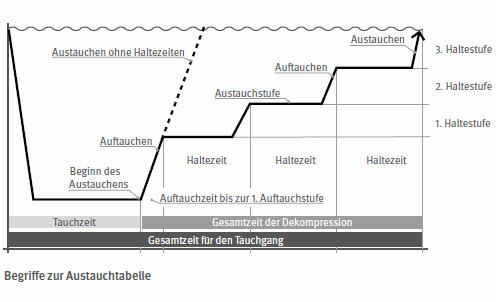

In dieser Anlage sind alle mit dem Austauchen in Verbindung stehenden Tabellen wie folgt zusammengefasst:
Das Austauchen ist alternativ nach

2.1 Gesamtzeit eines Tauchganges
Die Gesamtzeit eines Tauchganges darf für Tauchgänge bis 10,5 m Tiefe die in der Tabelle 1 angegebenen bzw. für Tauchgänge über 10,5 m, die in Tabellen 2 und 3 durch einen waagrechten roten Strich gekennzeichneten Werte nicht überschreiten. Die unterhalb des Striches aufgeführten Werte sind ausschließlich für den Notfall gedacht.
2.2 Tauchtiefe
Die Tabellen gelten für Tauchtiefen bis 50 m. Die in den Tabellen für Tauchtiefen bis 60 m rot gekennzeichneten Werte sind ausschließlich für den Notfall gedacht; sie dürfen im Normalfall nicht erreicht werden.
2.3 Luftdruck an der Tauchstelle
Die in den Tabellen angegebenen Werte sind auf einen Luftdruck an der Tauchstelle von 1 000 hPa (= 1 bar) berechnet. Bei Absinken des Luftdruckes unter 970 hPa infolge der Höhenlage der Tauchstelle (= 300 m über NN) und wetterbedingte Luftdruckschwankungen (= Tiefdrucklage) sind die in Tabelle 5 angegebenen Korrekturen vorzunehmen (siehe Abschnitt 8).
2.4 Wiederholungstauchgänge
Wiederholungstauchgänge sind Tauchgänge, die in weniger als 12 Stunden Abstand auf das Ende des vorangegangenen folgen. Die in den Tabellen 2 und 3 angegebenen Zeiten gelten nur für einmalige Tauchgänge. Für die Ermittlung der Austauchzeiten nach Wiederholungstauchgängen sind die in Abschnitt 9 angegebenen Hinweise zu beachten.
3.1 Ist ein Arbeiten in unterschiedlichen Wassertiefen erforderlich, ist der Tauchgang so zu planen, dass mit der Arbeit in der größten Tiefe begonnen wird und die jeweils folgende Arbeitsstelle in geringerer Wassertiefe liegt.
3.2 Im Verlauf seiner Arbeit darf der Taucher nicht über die gegebenenfalls erforderliche erste Haltestufe aufsteigen.
3.3 Auch bei Arbeiten in Wassertiefen von weniger als 7 m ist ein wiederholtes Aus- und Abtauchen zu vermeiden ("Yo-Yo-Tauchen"), da hierdurch das Dekompressionsrisiko deutlich ansteigt.
3.4 Beim Austauchen ohne Haltezeiten darf die maximale Aufstiegsgeschwindigkeit 10 m/min nicht überschreiten. Beim Austauchen mit Haltezeiten sind die in den Tabellen enthaltenen Vorgaben einzuhalten.
3.5 Hat ein Taucher versehentlich Haltezeiten nicht eingehalten, hat er sofort nach dem Erreichen der Wasseroberfläche wieder auf die Haltestufe abzutauchen, die er als Erste zu schnell verlassen hat. Für die Bestimmung der Haltezeiten des nachgeholten Austauchens ist die Zeit des vorangegangenen Tauchganges um die Zeit zu verlängern, die zum erneuten Erreichen der untersten zu schnell verlassenen Haltestufe erforderlich ist.
3.6 Grundsätzlich darf ein Taucher, der unmittelbar nach seinem eigenen Taucheinsatz als Reservetaucher eingesetzt werden soll, nicht die maximal zulässige Tauchzeit ausschöpfen. Zudem muss nach dem planmäßigen Taucheinsatz ein Wiederholungstauchgang zulässig sein (siehe letzte Spalte der Tabellen).
4.1 Die Austauchtabellen gelten für das Austauchen nach mittelschwerer Arbeit. Hat der Taucher schwere körperliche Arbeit geleistet, ist die erforderliche Austauchzeit bei der nächsthöheren Tauchzeitenstufe abzulesen.
4.2 Entspricht die Aufenthaltsdauer im Wasser oder die erreichte Tauchtiefe nicht einem der in der Tabelle angegebenen Wert, ist für die Ermittlung der Austauchzeiten der jeweils nächsthöhere Wert anzusetzen.
4.3 Die in der Tabelle angegebene Haltezeit beinhaltet die Zeit für den Aufstieg in die nächsthöhere Haltestufe bzw. an die Wasseroberfläche. Das bedeutet, dass die letzte Minute der jeweiligen Haltezeit für den Aufstieg auf die nächsthöhere Stufe verwendet werden kann.
Bei Ausfall der Sauerstoffanlage ist das Austauchen nach Tabelle 2 durchzuführen. Beim Austauchen mit Sauerstoff wird die Stickstoffentsättigung der Körpergewebe gegenüber dem Austauchen mit Druckluft deutlich beschleunigt. Bei Verwendung der Tabelle 3 ist daher das Verhältnis zwischen Tauchzeit und Dekompression günstiger als bei Verwendung der Tabelle 2.
6.1 Innerhalb von zwei Stunden nach dem Ende des Tauchgangs darf der Taucher nicht für körperlich schwere Arbeit eingeteilt werden.
6.2 Der Taucher muss sich in den an die Dekompression anschließenden 12 h in einem Bereich aufhalten, in dem er innerhalb von drei Stunden eine betriebsbereite Taucherdruckkammer erreichen kann.
Die Not-Dekompression ist wegen der damit verbundenen gesundheitlichen Risiken ausschließlich in Notsituationen zulässig. Auf die Bestimmungen des § 26 dieser Unfallverhütungsvorschrift wird verwiesen.
8.1 Beim Absinken des Luftdruckes an der Einstiegsstelle unter einen Wert von 970 hPa ist die Austauchzeit um die in der Tabelle 5 angegebenen Werte zu verlängern. Dies ist in der Regel bei einer Höhenlage der Einstiegsstelle von mehr als 300 m über NN der Fall; in Abhängigkeit von wetterbedingten Luftdruckschwankungen kann auch bereits früher - aber auch später - eine Korrektur erforderlich sein.
8.2 Die Berechnung der rechnerischen Tiefe erfolgt nach der nachfolgend beschriebenen Methode:
| 1. | Bestimmen der tatsächlichen Tauchtiefe |
| 2. | Ermitteln der Höhe der Taucheinstiegsstelle in Meter über NN bzw. des Luftdrucks |
| 3. | Ablesen der rechnerischen Tauchtiefe aus Tabelle 5; |
die rechnerische Tauchtiefe ist der Wert, der im Schnittpunkt der tatsächlichen Tauchtiefe mit der Spalte der Höhenlage bzw. des Luftdrucks liegt.
Beispiel:
| Tatsächliche Tauchtiefe: | 30 m |
| Höhenlage der Tauchstelle: | 850 m |
| Rechnerische Tauchtiefe: | 36 m |
Der Wert für die rechnerische Tauchtiefe ist die Grundlage für die Ablesung der Austauchzeiten der Tabelle 2 bzw. 3.
9.1 Bei Tauchgängen, die in den Tabellen 2 und 3 in der letzten Spalte mit "ja" gekennzeichnet sind, ist innerhalb von 12 h ein weiterer Tauchgang (Wiederholungstauchgang) zulässig.
Nach mit "nein" gekennzeichneten Tauchgängen ist kein Wiederholungstauchgang zulässig.
Die Ermittlung der Austauchzeiten und -stufen nach einem Wiederholungstauchgang ist auf die in den Abschnitten 9.2 und 9.3 angegebene Art und Weise möglich.
Bei Wiederholungstauchgängen im Tauchtiefenbereich > 7 m ist nach Möglichkeit, auch wenn nach Tabelle keine Haltezeiten erforderlich sind, eine Haltezeit von 3 min auf der 3 m-Stufe einzuhalten.
9.2 Zur Bestimmung der Austauchzeit und -stufen nach einem Wiederholungstauchgang wird die tatsächliche Zeitdauer des Wiederholungstauchganges um einen in der Tabelle 6 abzulesenden Zeitzuschlag verlängert. Dieser Zeitzuschlag lässt sich im Schnittpunkt der Spalte für das Oberflächenintervall mit der Zeile für die Tauchtiefe des Wiederholungstauchganges ablesen. Der Zeitzuschlag wird ausschließlich durch die Kenndaten des Wiederholungstauchganges vorgegeben, die Kenndaten des vorangegangenen Tauchganges werden durch den Vermerk in der letzten Spalte der Tabelle 2 bzw. 3 berücksichtigt.
Berechnungsbeispiel:
| 1. Tauchgang: | = |
(33 m Tauchtiefe) (35 min Tauchzeit) Wiederholungstauchgang möglich |
| Wiederholungstauchgang: | 30 m Tauchtiefe 30 min Tauchzeit 90 min Oberflächenintervall |
|
| aus Tabelle 6: | = |
25 min Zeitzuschlag rechnerische Tauchzeit 55 min |
| aus Tabelle 2: | Austauchzeit 54:45 min |
| Anmerkung: | Die Werte in Klammern sind für die Ermittlung nicht erforderlich, sie dienen als Vergleichszahlen zur Berechnung in Abschnitt 9.3. |
9.3 Abweichend von Abschnitt 9.2 ist die Ermittlung der Austauchzeiten auch nach folgendem Muster möglich:
Die beiden durchgeführten Tauchgänge werden zu einem zusammengefasst, indem die Einzelzeiten zusammengezählt werden und die im Verlauf beider Tauchgänge größte erreichte Tiefe angesetzt wird. Die Ermittlung der Austauchzeit erfolgt mit Hilfe der Tabellen 2 oder 3.
Berechnungsbeispiel:
| 1. Tauchgang: | = |
33 m Tauchtiefe 35 min Tauchzeit Wiederholungstauchgang möglich |
| aus Tabelle 2: | Austauchzeit 22:15 min | |
| Wiederholungstauchgang: | = |
30 m Tauchtiefe 30 min Tauchzeit (90 min Oberflächenintervall) rechnerische Tauchzeit 65 min rechnerische Tauchtiefe 33 m |
| aus Tabelle 2: | Austauchzeit 91:45 min |
| Anmerkung: | Die Werte in Klammern sind für die Ermittlung nicht erforderlich, sie dienen als Vergleichszahlen zur Berechnung in Abschnitt 9.2. |